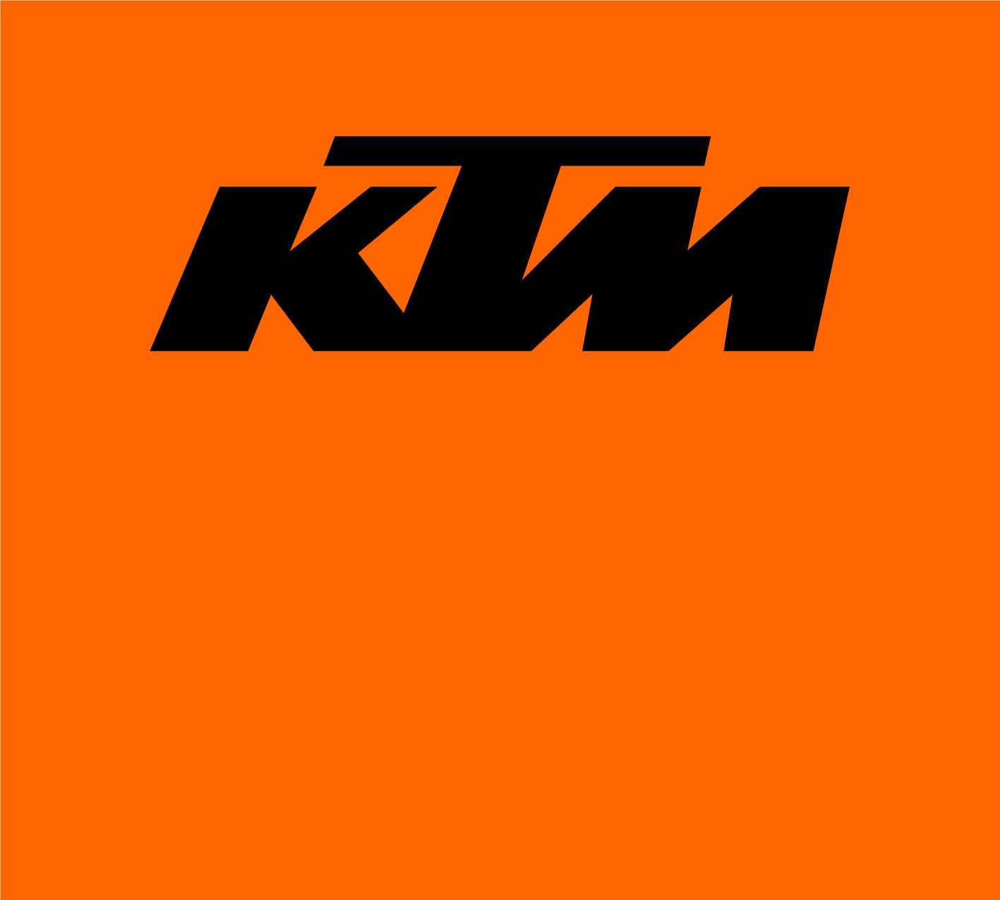

KTMKTM
KTM AG（奥地利）/ 中国大陆由 KTMR2R 渠道引进销售
在售车型12 款
价格区间3.50–21.98 万元
排量区间249–1301 cc
KTM 在售车型
| 型号 | 排量 | 类别 | 官方指导价 | 来源 |
|---|---|---|---|---|
| 390 Duke | 399 cc | 街车 | 39800元 | ↗ |
| 790 Duke | 799 cc | 街车 | 59800元 | ↗ |
| 890 Duke | 889 cc | 街车 | 102500元 | ↗ |
| 690 Duke | 693 cc | 街车 | 93800元起 | ↗ |
| 1290 Super Duke | 1301 cc | 街车 | 159000元起 | ↗ |
| RC 390 | 373 cc | 仿赛 | 39980元起 | ↗ |
| 790 Adventure | 799 cc | 拉力ADV | 81800元起 | ↗ |
| 890 Adventure | 889 cc | 拉力ADV | 129800元 | ↗ |
| 1290 Super Adventure | 1301 cc | 拉力ADV | 161800元起 | ↗ |
| 1290 Super Duke GT | 1301 cc | 旅行 | 219800元起 | ↗ |
| 250 Duke | 249 cc | 街车 | 34980元 | ↗ |
| 390 Adventure | 373 cc | 拉力ADV | 53800元 | ↗ |
5 条存疑，已核实但未纳入统计
- KTM 中国无独立官网车型/价目页：ktmchina.cn 实为无关「汽车服务网」站点，ktm.com 为全球站仅列车型不列中国建议零售价；按任务要求改用摩托范 KTMR2R 品牌在售页核实
- 790 Duke 2025 款官方指导价 69800 元，2026/2027 款摩托范报道降至 59800 元，本表采用现行 59800 元
- 现行 390 Duke 为 2024 起 LC4c 新一代 398.7cc（ktm.com 官方技术页标 399cc），旧款为 373cc；RC 390 仍为 373cc 平台，两者排量不同已分别记录
- 450 RC、RC8、1090 Adventure、300 EXC TPI、450 EXC-F、350 EXC-F 等竞赛越野/旧款车型与 200 Duke(199cc)、250 Duke(249cc)、125/250/390 SX-F 等 <250cc 车型未计入
- 990 Duke / 1390 Super Duke R / 990 RC R 等 ktm.com 全球 2026 车型在中国在售状态未核实，未计入
任务指定「ktm.com 中国 / KTM China」，但中国大陆无可用的官方车型价目页，故按任务允许用摩托范（58moto）KTMR2R 品牌在售页核实，仅收录该页有明确指导价且排量 ≥250cc 的公路车型。全球站 ktm.com 与摩托范交叉核对型号名。未抓到官网 header logo 的 img src，logoUrl 记 null。